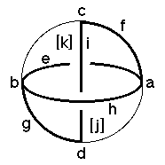
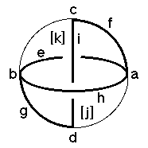

Underlying Topological Space: D3; Figure Pseudo-Symmetry (FPS): 1
Euclidean 3-Orbifold with Invariant-Lattice-Complex Letters
(left), Wyckoff Site Letters (right)
 

| FPS | Mult | Lattice Comp | Group Graph | Wyckoff Set | 2[4]Cover |
| 2-1 | I | 4'3'2' | a | ||
| 6-1 | J* | 4'2'2' | b | ||
| 8-1 | P2 | 23' | c | ||
| 12-1 | W* | 22' | d | ||
| 12-1 | I6[-]J*2 | 3'2'<4'>2'2' | e:a-b | ||
| 16-1 | I8[-]P22 | 4'2'<3'>2 | f:a-c | ||
| 24-1 | J*4[-]W*2 | 4'2'<2'>2 | g:b-d | ||
| 24-1 | I12[J2]J*4 | 4'3'<2'>4'2' | h:a-b | ||
| 48-1 | P26[-]W*4 | 3'<2>2' | i:c-d | ||
| 48-1 | m | j:egh | |||
| 48-1 | m | k:efh | |||
| 96 | 1 | l:i,jk | |||
| 48-1 | P26[-]J22 | 2*=3'2<1>2'2' | k1:c-h | [#221(e)] | |
| Struct-Mult | Critical Points | Heegaard Surf | Wyckoff Cut |
| BCC -1 | I/P2/W*/J* | H4'2'm{2} | e h i |
| Hg4Pt-1 | IP2/3'/W*/J* | H4'2'm{2} | e h i |
| Scub-1 | IJ*/4'W*/J2/P2 | H3'2'2'2'2m{1'1'} | e i (h1) (h1) |
 228
228 230
230 Orbifold Atlas Home Page
Orbifold Atlas Home Page Crystallographic Topology Home Page
Crystallographic Topology Home Page